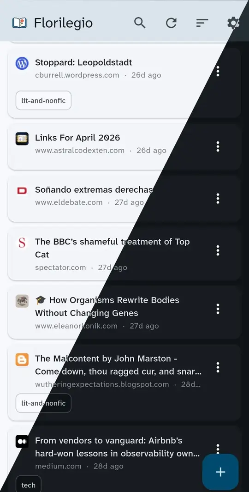

florilegio
A personal read-it-later app
Florilegio is a small, personal reading list. You save things to read later and it keeps them in one place you can open from your phone or your laptop. It takes its name from the medieval anthologies of selected passages.
Pocket shut down in the summer of 2025, and the alternatives kept adding things I had not asked for: summaries written by machines, recommendations, social feeds, subscriptions. I wrote this instead.
What it does is small and finite. You save a URL (from the Firefox extension, or by sharing or pasting it into the app) and the server fetches the page's title and metadata. You read what you saved on Android or in a browser, from the same list, with the same interface. If you came from Raindrop.io, a script imports your export. The database underneath is plain SQLite; nothing is locked in.
What it does not do is the rest of the bookmarking-app feature list. No summaries, no auto-tagging, no recommendations, no accounts, no sharing, no social. It is not a service you sign up for: you run it yourself, on Cloudflare's free tier, with your own data and your own URL.

Deploy your own
The whole stack fits in Cloudflare's free tier. In brief:
- Clone the repository and run
mise install. - Deploy the Worker to your Cloudflare account, with a generated token as a secret.
- Build the Flutter client and point it at your Worker's URL.
- Optionally, install the Firefox extension for one-click saves.
Full instructions are in the README.